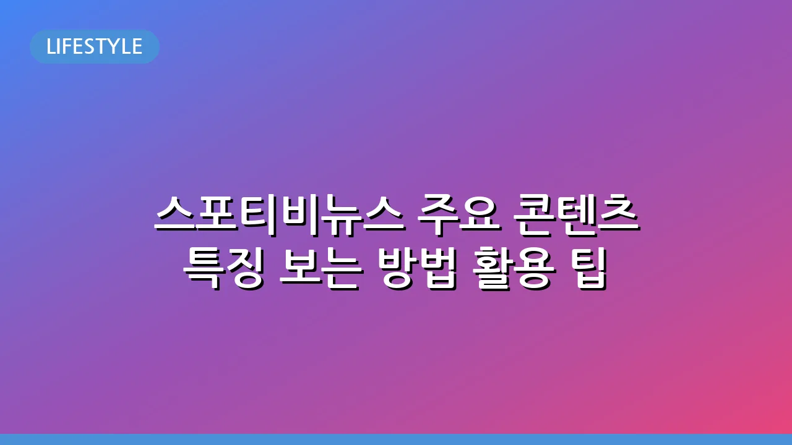

스포티비뉴스 주요 콘텐츠 특징 보는 방법 활용 팁
스포티비뉴스, 스포츠와 연예 소식의 중심
스포티비뉴스(SPOTV NEWS)는 스포츠와 연예 분야의 최신 소식을 빠르고 정확하게 전달하며 많은 독자들의 사랑을 받는 디지털 미디어입니다. 단순히 소식을 전하는 것을 넘어, 깊이 있는 분석과 현장감 넘치는 콘텐츠로 독자들에게 풍부한 정보를 제공하고 있습니다. 이 글에서는 스포티비뉴스가 제공하는 주요 콘텐츠와 특징, 그리고 이를 효과적으로 이용하는 방법에 대해 자세히 알아보겠습니다.
📌 관련해서 반려동물 용품 종류별 선택 가이드: 우리 아이에게 딱 맞는 필수품도 함께 참고해보세요.
스포티비뉴스란 무엇인가?
스포티비뉴스(SPOTV NEWS)는 국내 대표 스포츠 전문 채널인 SPOTV의 뉴미디어 플랫폼으로, 스포츠와 연예 분야의 전문성을 바탕으로 다양한 형태의 콘텐츠를 생산하고 있습니다. 웹사이트와 모바일 애플리케이션을 통해 기사, 사진, 영상 등 다채로운 형식으로 정보를 제공하며, 언제 어디서든 최신 소식에 접근할 수 있도록 합니다. 특히, 급변하는 스포츠와 연예계 트렌드를 실시간으로 반영하여 독자들이 가장 궁금해하는 정보를 발 빠르게 제공하는 것이 강점입니다.
스포티비뉴스의 주요 콘텐츠와 특징
스포티비뉴스는 광범위한 분야의 스포츠와 연예 소식을 다루며, 각 분야의 특성에 맞는 심층적인 콘텐츠를 제공합니다. 주요 콘텐츠는 다음과 같습니다.
- 스포츠 뉴스: 국내외 축구(K리그, 해외 리그), 야구(KBO, MLB), 농구, 배구, 이종격투기, e스포츠 등 다양한 종목의 경기 결과, 분석, 프리뷰, 선수 인터뷰, 이적 소식 등을 제공합니다. 특히 SPOTV가 중계하는 경기에 대한 정보는 더욱 풍부하게 다뤄집니다.
- 연예 뉴스: 드라마, 영화, K-POP, 방송 등 연예계 전반의 이슈, 스타들의 활동 소식, 인터뷰, 패션, 비하인드 스토리 등을 심도 있게 다룹니다. 트렌드를 선도하는 연예계 소식을 발 빠르게 전달하며 독자들의 호기심을 충족시킵니다.
- 영상 콘텐츠: 단순 텍스트 기사를 넘어, 짧은 하이라이트 영상, 인터뷰 영상, 현장 스케치 등 생생한 영상 콘텐츠를 제공하여 독자들에게 더욱 입체적인 정보를 전달합니다. 이는 SPOTV 채널의 강점을 뉴스 플랫폼에서도 활용하는 방식입니다.
- 기획 및 심층 분석: 단순 속보 전달을 넘어, 특정 이슈에 대한 심층적인 분석 기사, 전문가 칼럼, 데이터 기반의 인사이트 등 깊이 있는 정보를 제공하여 독자들의 이해를 돕습니다.
이러한 콘텐츠들은 빠른 속보성, 전문성, 그리고 독자들이 이해하기 쉬운 전달 방식으로 차별점을 가집니다.
스포티비뉴스를 효과적으로 이용하는 방법
스포티비뉴스를 최대한 활용하려면 몇 가지 팁을 알아두는 것이 좋습니다.
- 웹사이트 및 모바일 앱 활용: 스포티비뉴스 공식 웹사이트와 모바일 앱을 통해 언제든 최신 뉴스에 접근할 수 있습니다. 모바일 앱은 알림 설정을 통해 관심 있는 스포츠 팀이나 연예인, 특정 이슈의 속보를 실시간으로 받아볼 수 있어 매우 유용합니다.
- 관심 분야 맞춤 설정: 많은 뉴스 플랫폼들이 제공하는 기능처럼, 스포티비뉴스에서도 관심 있는 스포츠 종목이나 특정 리그, 연예 카테고리를 설정하여 관련 뉴스만 선별적으로 받아보거나 메인 화면에서 우선적으로 확인할 수 있습니다.
- SNS 채널 구독: 스포티비뉴스는 페이스북, 인스타그램, 유튜브 등 다양한 소셜 미디어 채널을 운영합니다. 이들 채널을 구독하면 주요 기사의 요약이나 영상 콘텐츠를 빠르게 접하고 다른 팬들과 소통할 수 있습니다.
- 관련 서비스 연계 활용: 만약 스포티비뉴스의 기사를 읽다가 특정 경기의 실시간 상황이나 지난 하이라이트 영상이 궁금하다면, SPOTV NOW(스포티비 나우)와 같은 OTT 서비스를 함께 이용해 보세요. 기사와 함께 영상 콘텐츠를 시청하며 더욱 생생하고 입체적인 정보를 얻을 수 있습니다.
스포티비뉴스의 강점과 독자층
스포티비뉴스의 가장 큰 강점은 '전문성'과 '속보성'입니다. 스포츠 중계 노하우를 가진 SPOTV의 뉴스 플랫폼인 만큼, 해당 분야에 대한 깊은 이해를 바탕으로 신뢰할 수 있는 정보를 제공합니다. 또한, 디지털 미디어의 특성을 살려 실시간으로 변화하는 상황을 가장 빠르게 독자들에게 전달합니다.
주요 독자층은 다음과 같습니다:
- 열정적인 스포츠 팬: 특정 팀이나 선수를 응원하며 관련 소식을 놓치고 싶지 않은 사람들.
- 연예계 소식 팔로워: 드라마, 영화, 음악 등 연예계 트렌드와 스타들의 활동에 관심이 많은 사람들.
- 이슈 분석가: 단순한 속보를 넘어 특정 사건이나 경기에 대한 심층적인 분석을 원하는 사람들.
- 모바일 뉴스 소비자: 언제 어디서든 스마트폰으로 뉴스를 확인하고 싶은 사람들.
이러한 독자들에게 스포티비뉴스는 단순한 뉴스 공급원을 넘어, 그들의 관심사를 충족시키는 중요한 정보 허브 역할을 합니다.
스포티비뉴스와 함께 즐기는 미디어 경험
스포티비뉴스는 스포츠와 연예 분야의 최신 정보를 갈망하는 독자들에게 없어서는 안 될 중요한 미디어 플랫폼으로 자리매김했습니다. 빠르고 정확한 속보, 깊이 있는 분석, 그리고 생생한 영상 콘텐츠까지 아우르며 독자들의 정보 갈증을 해소해 줍니다. 오늘부터 스포티비뉴스를 적극적으로 활용하여 여러분의 관심사를 풍요롭게 채우고, 변화하는 세상의 흐름을 놓치지 않는 현명한 미디어 소비자가 되어보시길 바랍니다. 언제나 최신 정보는 공식 웹사이트나 앱을 통해 확인하는 것이 가장 정확합니다.
🔗 이 글도 많이 찾아보세요: 사계절 제철 과일 종류별 효능 및 신선하게 고르는 법
관련 추천 상품
이 포스팅은 쿠팡 파트너스 활동의 일환으로, 이에 따른 일정액의 수수료를 제공받습니다.